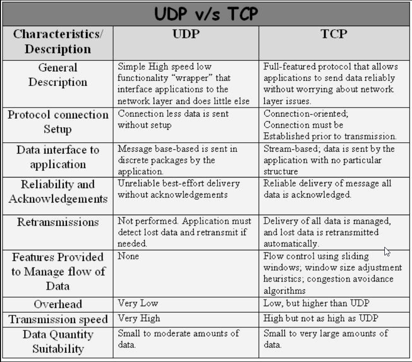

Transmission Control Protocol(TCP)
Its is a connection-oriented protocol that computers use to communicate over the internet. It is one of the main protocols in TCP/IP networks. TCP provides error-checking and guarantees delivery of data and that packets will be delivered in the order they were sent.
User Datagram Protocol (UDP)
Its is a connectionless protocol that works just like TCP but assumes that error-checking and recovery services are not required. Instead, UDP continuously sends datagrams to the recipient whether they receive them or not.
